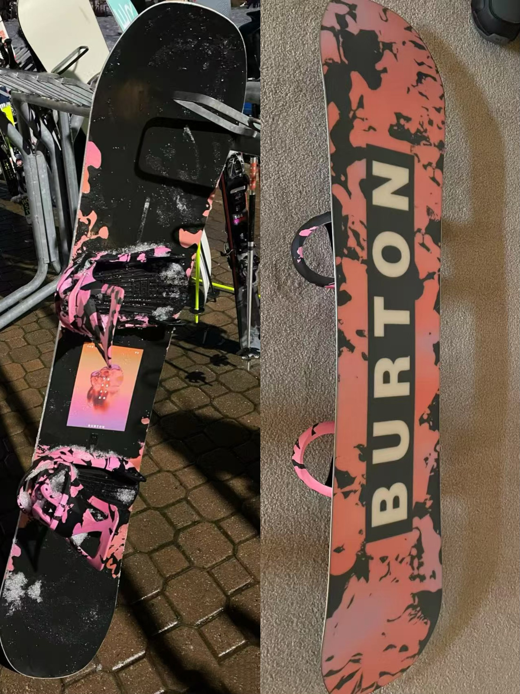

01 Chapter one
About
Welcome to my homepage.
My name is Donghan Fu, and I am a Ph.D. student in the School of Information Science and Learning Technologies (SISLT) at the University of Missouri‑Columbia. I am a member of the Technology to Enhance Learning Lab (TELL), led by Dr. Xinhao Xu.
My research brings together human‑computer interaction, human‑AI interaction, and health communication. I use design‑based research to build and study digital systems for health promotion. My current projects include digital games that use AI‑generated narratives to improve mental health literacy and an online storytelling community where breast cancer patients and survivors can share their experiences and support one another.
My work follows two interconnected strands.
Across these projects, my goal is to design digital spaces where people can make sense of health information in light of their own experiences, talk openly about sensitive issues, and find ways to support one another.
I hold a Ph.D. in Communication from Beijing Normal University (BNU), during which I was a visiting scholar in the Department of Communication Arts at the University of Wisconsin–Madison in 2024. I earned an M.A. in Journalism and Communication from Wuhan University (WHU), as well as dual bachelor's degrees: a B.S. in Chemistry from Central China Normal University (CCNU) and a B.A. in Advertising from WHU. Prior to joining SISLT at Mizzou, I worked as a postdoctoral researcher at WHU from 2024 to 2025.
Beyond my academic work, I enjoy developing games and building practical applications that people can use in everyday life. What I value most is hearing from the people I design for, seeing where a tool helps or falls short, and using that feedback to make it more useful. I'd especially love to connect with game developers, designers, and product teams in industry who are interested in building and testing tools that help people talk about health and find support.
Motto
Girls can be great scientists — and they can pursue their dreams at any stage of life.
In my spare time, I love snowboarding and dream of visiting and riding at all the most iconic ski resorts around the world.
